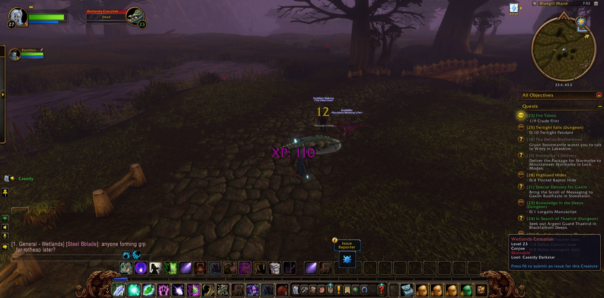

Cassidy Darkstar set out from the Cathedral of Light in Stormwind City, and there Rambleon the Hunter joined him, a companion who would walk beside him from the Cathedral to the door of Ironbeard's Tomb. Together they passed through the Deepwater Tavern of the Lion's Pride Inn and came to Menethil Harbor. From there the road ran by Baradin Bay and over The Great Sea, and so they reached the Eastern and Western Strands of the Hillsbrad Foothills. In Southshore he laid down one old errand, "The Shamed Lieutenant", and took up many new ones: "A Lack of Virtue", which bade him carry Tom's Gift back to Bart Tidewater in Menethil Harbor, and also "Down the Coast", "Brewer's Trade" and, in the Town Hall, "Syndicate Assassins".


On the Western Strand Eric the Shaman stood with them for a while. There the Torn Fin Tidehunters and Torn Fin Oracles fell ten by ten, as the errand required, and Cassidy stopped again and again to take pictures. Once he fell, and he soon rose again. Then the Daggerspine Shorehunters and Sirens of the Eastern Strand felt his strength. He went on to Nethander Stead and Dun Garok, where he gathered a Sack of Homebrew Hops and delivered the Fallrook Varietal, and so "Brewer's Trade" was finished. Fruit the Warrior came to his side for the gathering of ten Murloc Heads. Then "Farren's Proof" was carried through all its turns, the last of them a sack of heads brought to Marshall Redpath. After that came "Stormwind Ho!", ten Shorehunters and ten Sirens more. When that was done, Farren's report was put into his hands, to be brought to Major Samuelson in Stormwind Keep.


He kept faith with Tom's Gift first and brought it to Menethil Harbor. Then he went the long way round, by Dun Morogh and the Gates of Ironforge, by Searing Gorge and the Burning Steppes and Elwynn Forest, until he stood in Stormwind Keep. There the report was given up, and there Cassidy came into the strength of his twenty-seventh year of craft. He took a picture to mark it. Tyrone the Warrior went with him a little way, down into the Stormwind Stockade and out again by The Canals.


Then the road turned back the way it had come, past Blackrock Mountain and The Cauldron, Kharanos and Amberstill Ranch, until Cassidy came again to the Wetlands. In Bluegill Marsh and Sundown Marsh the crocolisks and the Mosshide gnolls stood against him, Brutes and Trappers, an Alpha and a Mystic among them. He gathered nine pieces of Crude Flint for "Fire Taboo". At Dun Modr he took up "A Grim Task", "The Thandol Span" and "Bring Back a Bang". Then he crossed the Thandol Span into the Arathi Highlands and came as far as Refuge Pointe and Dabyrie's Farmstead.


Back in the Wetlands, at The Green Belt, "Fire Taboo" was finished, and he accepted "Blisters on the Land" and "Forced Disarmament". Lance the Hunter fought beside him only briefly, against a Dragonmaw Reclaimer. Ninja the Rogue and Steel the Paladin went with him to Ironbeard's Tomb, where a Nightveiled Rotheap fell. There Rambleon at last took his leave. Cassidy walked on alone into Sundown Marsh and took one last picture there, and the Wetlands still lay open before him.
